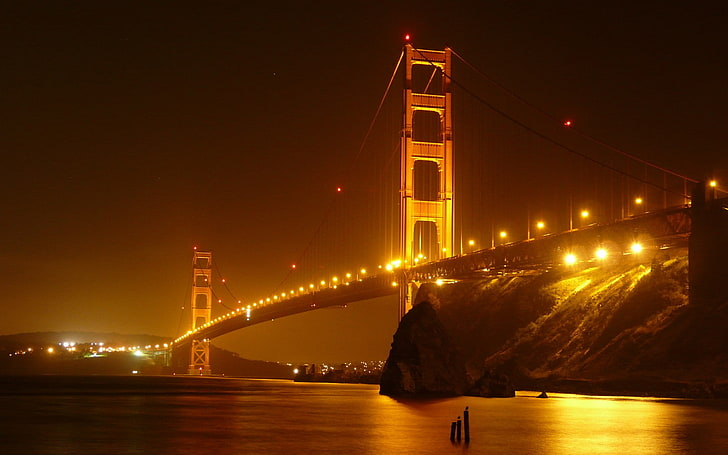
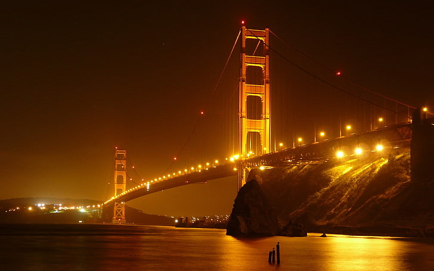

Description:
The Golden Gate Bridge is a suspension bridge spanning the Golden Gate, the one-mile-wide (1.6 km) strait connecting San Francisco Bay and the Pacific Ocean. The structure links the U.S. city of San Francisco, California—the northern tip of the San Francisco Peninsula—to Marin County, carrying both U.S. Route 101 and California State Route 1 across the strait. The bridge is one of the most internationally recognized symbols of San Francisco and California. It was initially designed by engineer Joseph Strauss in 1917. It has been declared one of the Wonders of the Modern World by the American Society of Civil Engineers.
Why to visit?:
The Golden Gate Bridge is an iconic place that has stunned the western part of the country for years. Its massive size and unique color
make for a picturesque scene over the Golden Gate, which is the one-mile strait that connects San Francisco Bay to the Pacific Ocean.
If you’ve never been to this iconic bridge, here are five reasons you should really consider doing so.
As you take in the view of the Golden Gate Bridge, why not spend the rest of your day at the Golden Gate Recreational Area. It may be
hard to picture it now, but the untouched public recreational lands are only a few short miles away from the bridge. These are full of
over 82,000 acres of land that stretches from Tomales Bay to Silicon Valley. You can endure a heart-racing hike through the hilly
headlands. You can see the ruins at Lands End. Or, you can enjoy hiking your way to a hidden beach on the Tennesse Valley Trail. There
are so many outdoor adventures waiting for you at the Golden Gate Recreational Area.


 

Transport:
Via Car:
Most of the time, driving to attractions in San Francisco isn’t a good idea. But there are several parking lots close to the Golden Gate Bridge which makes it very easy to get to by car. To access the parking areas, you have to take the last SF exit when you are driving on Presidio Parkway.
Via Bus:
The bus that drives you directly to the Golden Gate Bridge is Muni Bus #28-19th Avenue. This bus drops you off at the welcome center right in front of the bridge. You can catch this bus around Fisherman’s Wharf and from the Golden Gate Park. Make sure to check the route via the SF MTA website.
Other places to visit:
- Palace of Fine Arts
- California Academy of Sciences
- Twin Peaks
- Alcatraz Island
- Fisherman's Wharf
- Ride the Cable Cars
- Golden Gate Park
- Legion of Honor